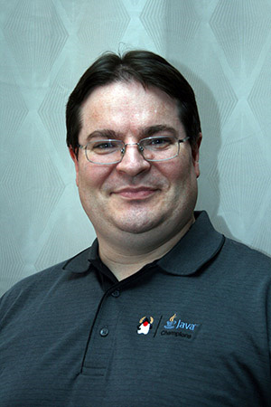
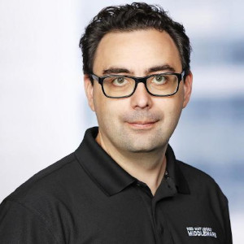

L’accueil | Le programme | Les orateurs | S’enregistrer | L’équipe | Le lieu
Vous pouvez retrouver la liste complète de nos speakers sur cette page. Vous pouvez réserver vos places sur cette page.
La prochaine version LTS du JDK sera diffusée en septembre prochain. Cette présentation brosse une revue des principales fonctionnalités proposées dans cette version 25 LTS du JDK : - nouvelles issues de projets d’OpenJDK (Amber, Loom, Panama, Leyden) - dans API de Java Core qui ne font pas l’objet de JEP - dans la JVM HotSpot - relatives à la sécurité - et celles dépréciées ou supprimées

Passionné par le développement de logiciels et par la veille technologique, je possède une longue expérience, en SSII/ESN et personnelle, dans l’écriture d’applications avec différents langages. Je suis actuellement Senior tech lead pour la société Sciam. Utilisant Java depuis sa version 1.0, j’aime partager ma passion pour cette plateforme et son écosystème notamment en me consacrant, depuis presque vingt années, à la rédaction de deux tutoriels, intitulés “Développons en Java”, diffusés sous licence GNU FDL. Ce travail m’a permis d’être nommé Java Champion. Je suis également un des cofondateurs du Lorraine JUG.
L’en-tête de chaque objet Java en mémoire utilise 96 octets, par fois même 128, ce qui, pour une instance d’Integer qui transporte un entier sur 32 bits n’est pas négligeable. Le véhicule est beaucoup plus lourd que le chargement, ce qui n’est pas très efficace ! Cette consommation importante a un impact non seulement sur la mémoire qu’une application Java a besoin, mais également sur les traitements, car elle augmente le travail des garbage collectors. L’objet du projet Lilliput est de réduire cet en-tête à 64 octets, en révisant les mécanismes de gestion des objets en mémoire. L’objectif est de réduire l’empreinte mémoire et d’alléger le travail des garbage collectors, ce qui aura un impact sur la consommation du temps CPU. Nous parlerons pointeurs, adressage d’objets, fonctionnement des garbage collectors, allocation mémoire, organisation des objets en mémoire, et dresserons l’état des lieux de ce projet.
Agorapulse a initialement bâti sa plateforme sur le framework Grails, qui permettait un développement rapide avec une petite équipe. Avec la croissances des équipes, l’essor des single-page-apps et des architectures microservices, ses limites sont devenues évidentes. Le lancement de Micronaut puis l’intégration de Micronaut dans la version 4 du framework Grails ont marqué un tournant, permettant une transition progressive depuis Grails. De nos premières fonctions AWS Lambda utilisant Micronaut 1.0.0.M1 en 2018 à l’extinction de nos dernières applications Grails en 2025, le récit de 7 ans d’une migration très progressive.
Au cours des 20 dernières années, Jean-Vincent a principalement travaillé autour des technologies Java et Web, d’abord en contribuant au développement d’XWiki un wiki Open-Source écrit en Java, puis chez Agorapulse ou l’écosystème Java est omniprésent.
Clément Escoffier et Emmanuel Bernard, co-lead et ex-co-lead du projet Quarkus, vous présenteront les dernières évolutions et futures innovations de Quarkus. Après une brève description de la philosophie et des principes fondamentaux qui guident ce framework, nous explorerons les avancées récentes et la manière dont ces innovations émergent.
Nous aborderons des sujets clés tels que :

Alors que nous sommes tous enthousiastes devant le futur heureux que nous promettent les ordinateurs quantiques, que se passerait-il si une telle puissance de calcul était utilisée pour compromettre les algorithmes cryptographiques qui sécurisent les données et les communications actuelles ? Même si le Y2Q ou le Q-Day semblent lointains, des acteurs malveillants volent déjà des données cryptées actuellement illisibles dans l’espoir de pouvoir les décrypter à l’avenir. Les applications Java peuvent résister aux attaques classiques et quantiques en adoptant le chiffrement à clé publique hybride (Hybrid Public Key Encryption - HPKE), une nouvelle norme qui utilise le mécanisme d’encapsulation clé (Key Encapsulation Mechanism - KEM) asymétrique, la fonction de dérivation de clé (KDF) et le chiffrement authentifié avec données supplémentaires (AEAD). Cet exposé montre le lien entre ces concepts, leur implémentation dans la sécurité du JDK et explique comment ceux-ci peuvent être intégrés pour transmettre des messages sécurisés à résistance quantique en Java. À la fin de cet présentation, vous comprendrez comment utiliser des capacités de sécurité et de la chaîne d’outils du JDK (keytool, jfr) pour renforcer votre application et résister aux menaces de l’ère quantique.
Ana est Java Champion, Senior Developer Advocate dans l’équipe Java Platform Group chez Oracle, avec une forte expérience en Java et développement Cloud. Elle contribue également à de nombreux événements Java. Elle a acquis son expérience dans l’utilisation du JDK, de ses fonctionnalités avancées et de son outillage en se confrontant aux réalités des applications Java et de leurs frameworks en production.
Depuis Java 21, Java a 3 façon différentes d’organiser son code si l’on veut faire différente calculs sur des données, la programmation orienté objet (OOP), la programmation orienté données (DOP) et la programmation fonctionnelle (FP). Et prenant comme exemple, l’implantation d’une petite partie de la comande sed (le s/foo/bar) et avec l’aide plus ou moins efficace de Mr Claude Sonnet (fameux LLM et grand mage), je vous propose d’expliquer comment en Java organiser son code suivant ces 3 paradigmes et de discuter de leurs avantages et incovénient.
Java Plombier, Maître de Conférence, Virtual Machine Whisperer, martyrise ses pauvres étudiants, complexifie Java en étant expert pour les JSR 292, 335 et 376, développe des librairies et langage dynamiques open source utilisés ou pas.